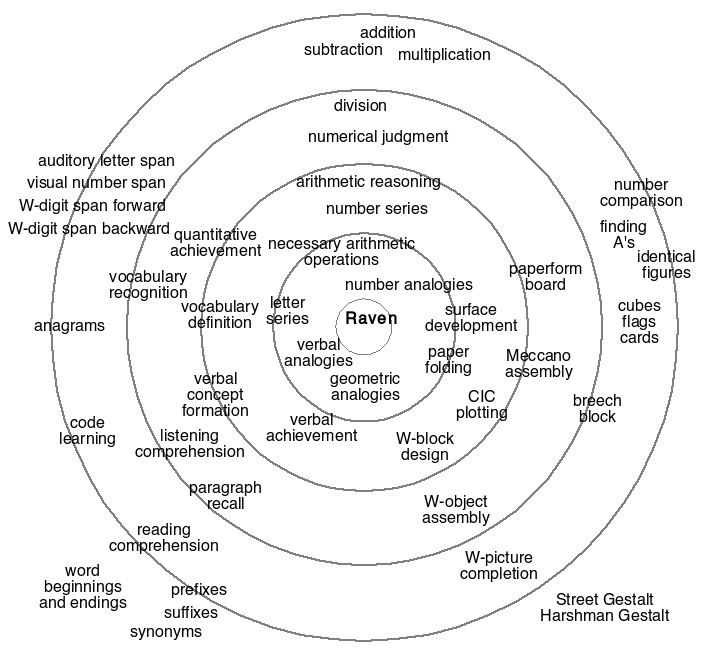

Unit 16: analogy, and creativity

counterfactual thinking and creativity
You see things as they are and ask, 'Why?'
I dream things as they never were and ask, 'Why not?'
creativity: from problem solving to meta-problem solving
The generic meta-problem: realizing and evaluating the
problematicity
of a given situation.
Some questions that are always relevant: "What if...?"; "Why not...?"
Any other ideas?
from thinking to creativity via...

Recall that working memory is an algorithmic-level account of general
intelligence (gF or IQ).
What could be a corresponding task-level account?
ANALOGY.
A schematic summary of a meta-analysis of scores of results quantifying
the relationships among various intelligence tests.
Raven's Progressive Matrices and other analogy
tests turn out to be central in any numerical assessment of general
cognitive function.
an informal computational analysis of a Raven's task

To solve matrix analogy problems such as this one, it is necessary to
carry out the following computations:
- identify the primitive elements;
- determine the relevant features;
- describe each of the given items in terms of these;
- infer the rules that hold for each row and column;
- derive a description of the missing item;
- scan the candidate answers for an item that fits best the expected
missing item.
Can you tell which mode of reasoning (deduction, abduction,
induction, ...), if any, is used at each step?
Much as in visual scene interpretation, the information that is critical to this
analogy task has two components: the ROLES of the elements and their POSITIONS.
analogy and creativity: roles of parts in composite wholes

The power of roles and combinatorics and of "seeing
as" (read Douglas Hofstadter's essay on seeing A's and seeing As).
roles of parts in wholes; variations on a theme as the crux of creativity
The computational challenge
in typeface design:
capture the spirit
of A
or 黑 in a low-dimensional parameter
space.
It
cannot be the "raw" pixel space of a
typical glyph, which has at least 800x600 dimensions.
[from Variations on a Theme as the Crux of Creativity, Douglas
Hofstadter, Scientific American, 1982]
creativity: some general observations
Traits implicated in creativity:
- verbal fluency
- fluency of ideas
- redefinition and divergent thinking (DT)
- openness to experience
- independence of thought
- capacity to bring together remote associations
- capacity to expend effort in the production of ideas
There is no correlation, above an IQ level of 120, between IQ scores
and creative ability [D. W. McKinnon (1962). The nature and
nurture of creative talent, American Psychologist 17:484-495.]
divergent thinking

Move two matches and make four squares, one of them larger than the other
three.
divergent thinking (the Duncker task)
Attach a candle to the wall using only the objects shown in the
picture.
an opportunity for getting creative: analogy problems

What is to a triangle as a triangle is to a square?
What is to four dimensions as the Penrose triangle is to three?
What is to Greece as the
Falkland Islands are to Britain?
What is to China as February 1917 is to Russia?
What is to the US as the Eiffel Tower is to France?
What is to German as Shakespeare's plays are to English?
What is to Chinese as Dante's
Divine Comedy is to Italian?
What is to 1-2-3-4-4-3-2-1 as 4 is to 1-2-3-4-5-5-4-3-2-1 ?
What is to xyz as abd is to abc?
a computational model of analogy: MetaCat (Hofstadter, 1995; Marshall, 2002)

The domain: letter string analogies.
Slipnet:
conceptual spaces.
Coderack:
procedures for SEARCHING problem spaces.
Workspace:
working memory.
search / variations on a theme / continuity in creativity
Metacat's Coderack includes the knowledge of reasonable/effective VARIATIONS
[for the letter string domain]
continuity in creativity
[from Beyond the myth of the genius, Robert Weisberg (1993)]
continuity in creativity
[from Beyond the myth of the genius, Robert Weisberg (1993)]
continuity in creativity
[from Beyond the myth of the genius, Robert Weisberg (1993)]
James Watt's steam engine

Watt and Newcomen
steam engineering in ancient Egypt
Opening temple doors when a fire is lit on the altar —
Cf. Arthur C. Clarke's
Third Law:
Any sufficiently advanced technology is indistinguishable from
magic.
Corollary: if a piece of technology is distinguishable from magic, it is
insufficiently advanced (by modus tollens).
the Wright brothers: the thrill of invention
| 1899 | biplane |
Chanute? Langley? |
| hinged wing | Chanute |
| wing warping | bird wing tips |
| 1900 |
dihedral angle
|
precedents |
| flat rudder | precedents |
| operator prone | [reduce drag] |
| 1901 | larger wings | [need
more lift] |
| skids | [safer landing] |
| change cloth | [more lift] |
| 1902 | fixed
tail | [stability] |
| wing shape | [wind tunnel experiments] |
| varied camber | [wind tunnel] |
| rudder shape | [wind tunnel] |
| 1903 | new
motor | adapted
auto engine |
| better propellers | [wind tunnel; trial & error] |
the Wright brothers: the thrill of invention
the Wright brothers: first in flight
first in flight